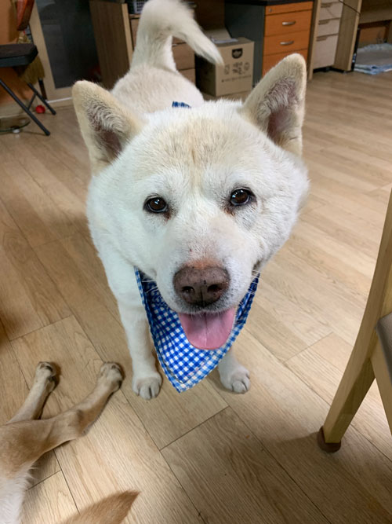
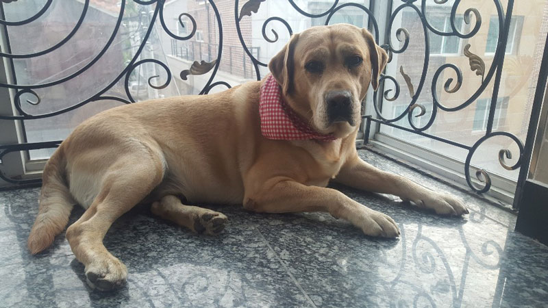

自己紹介
キム ジュヨン
韓国から日本に留学
３月末に日本に来て２ヶ月ぐらい(５月基準)
京都造形芸術大学 情報デザイン学科 クロステックデザインコース
好きなもの、こと
- 服
- 動物
動物は犬と猫みたいな人々がよく飼っている動物が好き
実家で犬が二匹
- 珍島(ジンど)犬 シロ(shiro) 
- ラブラドルレトリバー ミロ(miro) 
趣味は料理
他の人に料理してあげるのが好き
韓国料理をよく作る、その中タッカルビが一番自信がある
キム ジュヨン
韓国から日本に留学
３月末に日本に来て２ヶ月ぐらい(５月基準)
京都造形芸術大学 情報デザイン学科 クロステックデザインコース
好きなもの、こと
趣味は料理
他の人に料理してあげるのが好き
韓国料理をよく作る、その中タッカルビが一番自信がある